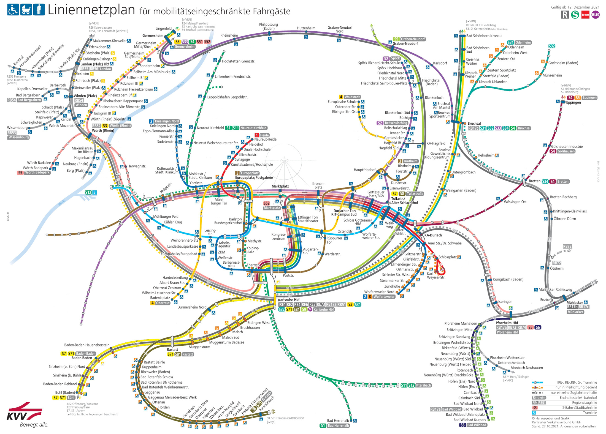
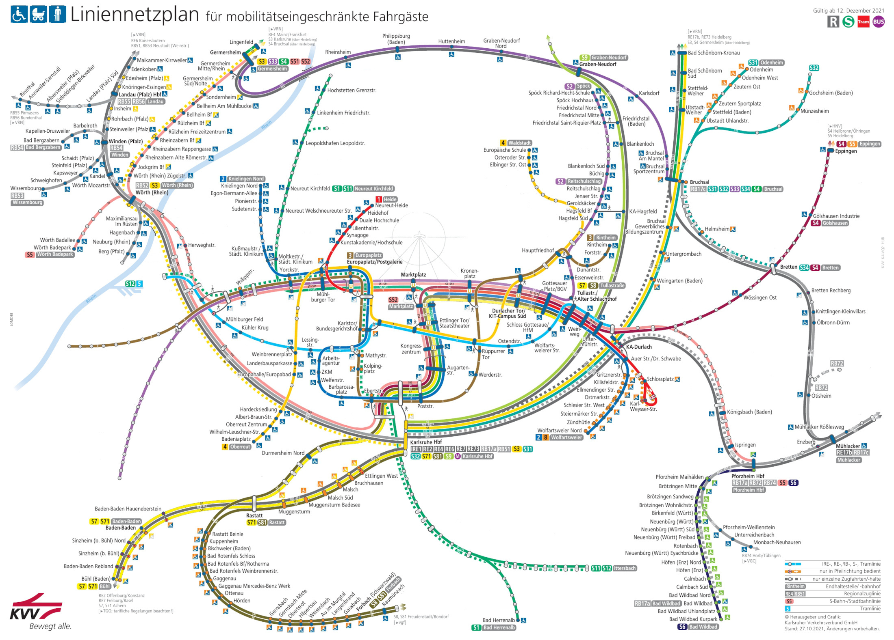
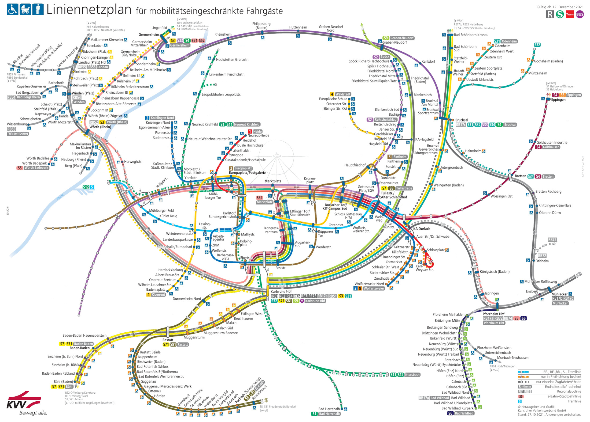

Das ist eine Visualisierung der Haltestellen in Karlsruhe (und im KVV-Gebiet), die für Rollstuhlfahrer zugänglich sind. Du kannst den Slider hin- und her bewegen um zu vergleichen.
Weitere hilfreiche Karten sind wheelmap.org, Karlsruhe Barrierefrei und Haltestellen mit Angaben zur Barrierefreiheit im Transparenzportal der Stadt Karlsruhe.

Hinweis: Viele relativ neue Bahnsteige auf den Linien S1, S11 und S2 haben eine Höhe von 38cm. Also 4 cm über der neuen Normhöhe 34cm und werden deswegen nicht als Behindertengerecht angezeigt.
Die Original-Karte wurde vom KVV erstellt und veröffentlicht. Stand: 09. Dezember 2021. Visualisierung von Code for Karlsruhe.
Redeployment von Arduinas Projekt aus Berlin. Die Idee kommt von der Hamburger Initiative Mappable.
Der Code dieser Seite ist auf GitHub